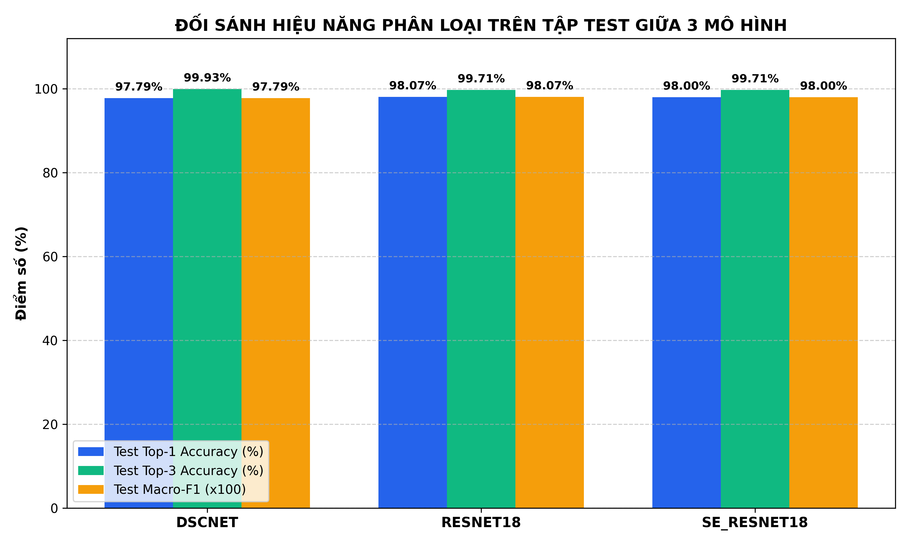
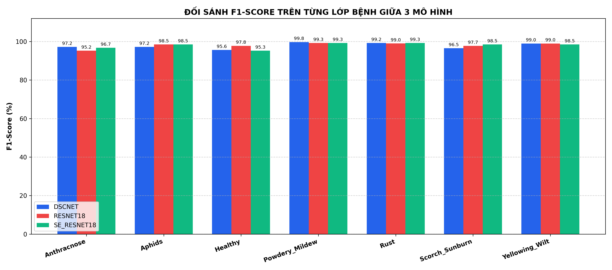
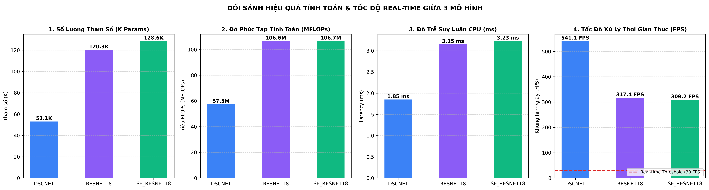
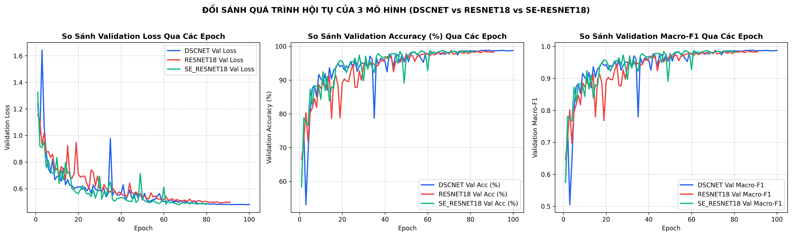
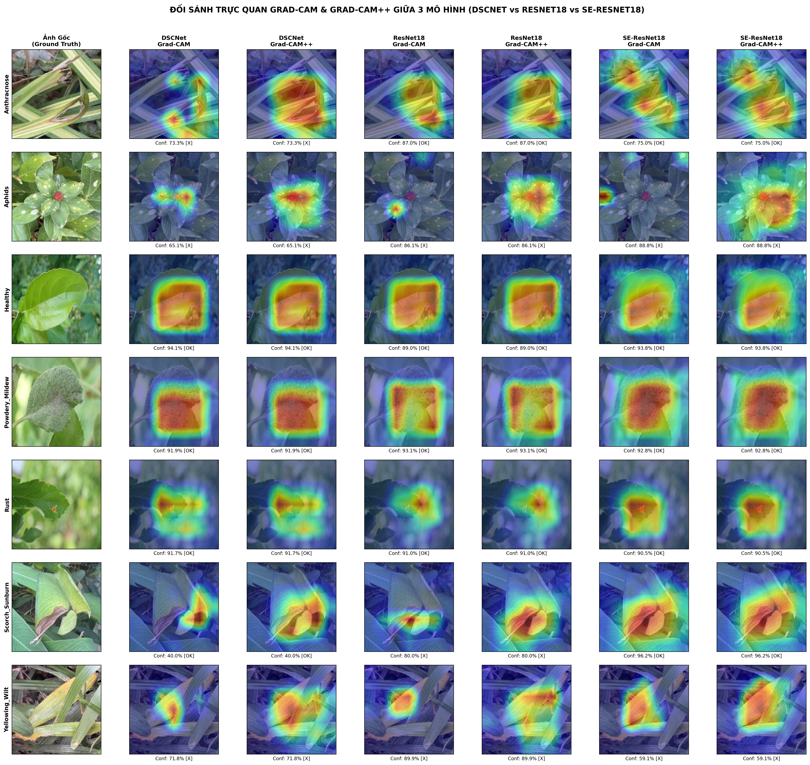

Test Macro-F1: 0.9807 | Test Top-1 Accuracy: 98.07% | Test Top-3 Accuracy: 99.71% | Tham số: 120,279 (106.64 MFLOPs / 51.78 MMACs) | Tốc độ CPU: 3.15 ms (317.4 FPS)
| Hạng | Mã Mô Hình | Kiến Trúc | Số Tham Số | FLOPs (M) | MACs (M) | Dung Lượng | Epoch Tốt Nhất | Val Acc | Val F1 | Test Top-1 Acc | Test Top-3 Acc | Test Macro-F1 | CPU Latency | CPU FPS | Vai Trò |
|---|---|---|---|---|---|---|---|---|---|---|---|---|---|---|---|
| 1 | RESNET18 | ResNet-18 (Compact Bottleneck 1x1) | 120,279 | 106.64 | 51.78 | 1.51 MB | 71 | 98.79% | 0.9878 | 98.07% | 99.71% | 0.9807 | 3.15 ms | 317.4 | BEST MODEL (Real-Time App) |
| 2 | SE_RESNET18 | SE-ResNet-18 (Channel Attention) | 128,599 | 106.65 | 51.79 | 1.63 MB | 61 | 98.79% | 0.9879 | 98.00% | 99.71% | 0.9800 | 3.23 ms | 309.2 | Baseline Comparison |
| 3 | DSCNET | DSCNet (Compact Depthwise Separable) | 53,055 | 57.46 | 26.76 | 0.72 MB | 87 | 98.86% | 0.9886 | 97.79% | 99.93% | 0.9779 | 1.85 ms | 541.1 | Baseline Comparison |
| Lớp Bệnh (Disease Class) | DSCNet | ResNet-18 | SE-ResNet-18 |
|---|---|---|---|
| Anthracnose | 0.9719 (95.0%) | 0.9524 (95.0%) | 0.9674 (96.5%) |
| Aphids | 0.9723 (96.5%) | 0.9848 (97.0%) | 0.9848 (97.0%) |
| Healthy | 0.9561 (98.0%) | 0.9779 (99.5%) | 0.9526 (95.5%) |
| Powdery_Mildew | 0.9975 (100.0%) | 0.9926 (100.0%) | 0.9926 (100.0%) |
| Rust | 0.9925 (99.5%) | 0.9901 (100.0%) | 0.9926 (100.0%) |
| Scorch_Sunburn | 0.9653 (97.5%) | 0.9773 (97.0%) | 0.9851 (99.5%) |
| Yellowing_Wilt | 0.9899 (98.0%) | 0.9899 (98.0%) | 0.9848 (97.5%) |




